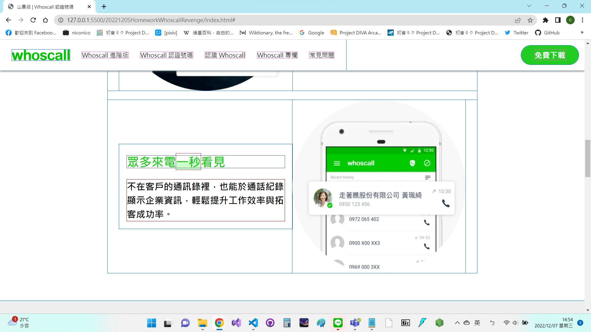
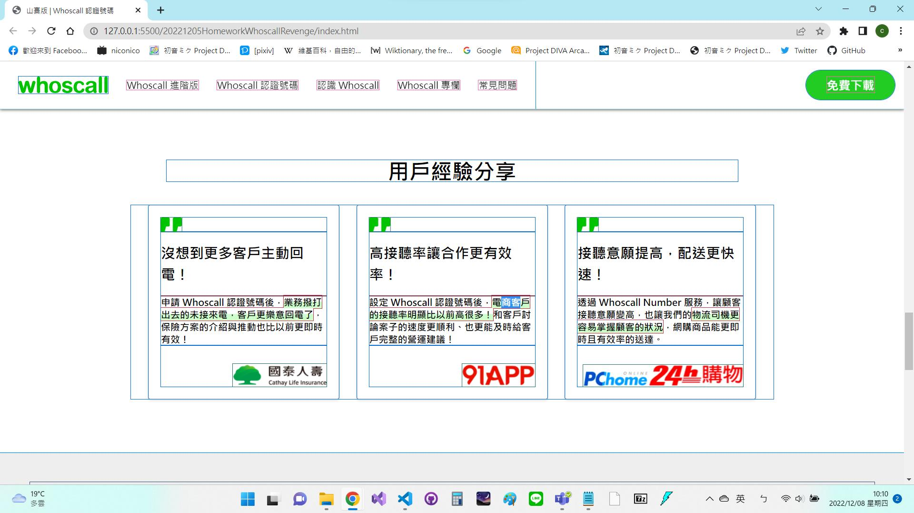

-
2022.11.21
作業 指定版型切版 （另一個版本）下方排圖片的區塊是強制賦予明確的高度值，再令大圖的高度值是
100%。原是以此來解決圖片寬度可能超格而蓋住左右各三欄的情形；但如此可能難以適應整體高度的改變（例如將內容由三欄變成五欄，而間距維持原樣），反而是高度會超格。目前完成的畫面在固定寬高之視窗下，外觀雖然大致接近預期，但可能不靈活，難以適應版面內容的改動。-
問題1：
.item設定flex之後圖片被拉伸解決方案：將
h3和p預設的margin設為0，高度即恢復預期（可推測其隨著文字內容被拉伸） -
問題2：
.item設定space-evenly之後無法拓開間隔解決方案：在外層的
.box設定space-evenly（因此是選取到錯誤的物件） -
問題3：
.container（整體）的寬度固定，拉動視窗時（毫不意外地）會在螢幕寬時不美觀解決方案：
width: 100%;其餘寬度盡量改成比例 -
問題4：寬度改成比例之後，小圓圖會被文字拉伸
解決方案：設定小圓圖的
max-width和max-height -
問題5：小物件的
title和p隔太開解決方案：
title的margin-bottom和p的margin-top: 0; -
衍生的問題：由於
title和p的高度本身不一致（未reset），造成文字相對於圖片略有錯位解決方案：把
title和p的margin都設為0，再將.text（title和p的父層）的margin設auto
指定版型切版
花費時間： 2 小時
-
-
2022.11.28
作業1 建立國小課表 作業2 whoscall切版整體排版依賴
flex，較大程度是以個人透過電腦目視之尺寸來排版，加上有不少部分是直接將寬度或高度寫死；因此若螢幕寬度稍有不同，可能就會有比例或尺寸不符預期的情況發生。要言之，目前排版使用的方案可能較不靈活。
另外，由於是將整個版面切成橫向的各部分分開做，而這些部分可能有不少重複的樣式，以各自的選擇器設定樣式，因此可能有不少冗餘程式碼的問題，有待未來進一步精簡與重構。-
問題1：「正版」whoscall的
<footer>文字列的標題.title與列表各項的文字間距不等寬，若使用flex直接排列無法直接實現。解決方案：將列表各項設為
<li>並打包成一整個<ul>，令flex作用於.title與<ul>之間，並用行高控制<li>各項的距離。 -
問題2：將
<footer>的寬度設成100%難以調整列表物件間的間距，而若非100%則又無法填滿背景顏色。解決方案：將
<footer>設背景色且寬度設為100%，並將物件另外打包成.wrap，接著對.wrap設定適合的寬度。 -
問題3：引號的圖片本身與預期（即「正版」whoscall網頁中該圖的方向）左右顛倒。
解決方案：使用
transform: rotateY(180deg);實現水平鏡像翻轉。 -
問題4：最上方的標題列設
position: fixed; z-index: 1;（老師說此處不用隨著畫面捲動，但此處還是試著做了）後，banner左上的圓弧往上移到標題列後方。解決方案：設該圓弧的
margin-top為標題列的高度，即80px。
建立課表以及whoscall切版
（另外，其實有3個小時左右都在處理
<footer>右側那4個icon的顏色和尺寸問題，以及如何經由Font Awesome引用那些icon。這些時間也算進了總時數）花費時間： 1 + 11 小時
-
-
2022.12.05
作業 whoscall再次切版-
問題1：圖文子標題
.highlight的部分超格（如圖）解決方案：
h3設line-height: normal;解決（但是不清楚原因） -
問題2：用戶經驗分享內文
.highlight的部分稍微超格（如圖）解決方案：尚未解決。設定
line-height無用
whoscall再次切版
花費時間： 6 小時
-
-
2022.12.08
作業 Toyota頁面排版-
問題1：黑紅底色標題區的定位問題
相關結構簡圖：
<.grey />（灰色方塊）
<.img>（大圖區）
<.appeal>（黑紅底色標題區）
<.title />（紅底標題）
<.txt />（黑底內文）
</>
<.explain />（說明內文）
<.icon-play />（播放鍵）
</>-
思考：將內文
.txt與大圖區.img切齊，預想也許標題區.appeal會隨著子層被移動而移動問題1-1：將黑底內文
.txt設絕對定位，令其top: 0;與大圖容器切齊；而紅底標題卻留在原地，沒有隨著移動發現：黑底內文
.txt該層單獨脫離空間自由移動，因此必須將絕對定位設給整個黑紅底色標題區.appeal，才能同時定位解決方案：設整個黑紅底色標題區
.appeal為絕對定位。此時紅底標題上緣切齊大圖上緣，仍未達到目的 -
思考：若設
.appeal絕對定位，如何將.txt黑底切齊大圖？思考利用transform將.title往上移的可能性問題1-2：將
.title設定transform: translate(0, -100%);使其往上平移一段相當於自身高度的距離；但原地會留出空白發現：使用
translate移動.title後，仍然佔據著原先所在的空間，造成.title與.txt間留著一段相當於.title高度的距離解決方案：設定
.title的position為inherit（繼承），使其可以拉著內文往上跑；如此達成高度未寫死，且內容可隨意增減，畫面仍然切齊的目的
-
-
思考：
.title設定inherit實際上繼承了.appeal的絕對定位，不清楚是否算用掉1個或是2個扣打。此處假設用掉2個，只剩1個扣打問題2：是否有辦法只使用1個絕對定位，便能將灰色方塊
.grey、說明內文.explain和播放鍵.icon-play都移動到指定位置？發現：整體寬度為960px的情況下，
.explain貼齊左緣，而.grey貼齊右緣。考慮定位的方便性，嘗試將該兩物件設定相對定位解決方案：
.explain設相對定位，top: -10%;，左或右為-160px；.grey設相對定位，top: 180px;，margin-left和right為auto；而.icon-play使用絕對定位。綜上所述，該三物件僅使用1個絕對定位便達成目的
Toyota頁面排版
最終結構：
<.grey />（相對 relative）
<.img>（相對 relative）
<.appeal>（絕對 absolute）
<.title />（繼承 inherit）
<.txt />
</>
<.explain />（相對 relative）
<.icon-play />（絕對 absolute）
</>花費時間： 6 小時
-
-
2022.12.12
作業 RWD練習花費時間： 1 小時
-
2022.12.15
作業 RWD雙層選單 （JavaScript版）-
問題1：將子清單的開關（
checkbox）放在header外面，使得CSS程式碼過於冗長解決方案：將每個
checkbox放在對應的.item內，如此除了精簡CSS選取器長度以外，還可以透過選擇.sub-ctrls:checked ~ .sub-nav一次設定每個子清單的開關，而不需要個別選取並設定 -
問題2-1：手機版畫面時，將
.main-item（即主清單的每個項目）設flex，使得內部的超連結及箭頭橫排時，控制箭頭開啟.sub-nav（display:none → block）後，.sub-nav也加入該橫排解決方案：將
.main-item的超連結及箭頭（即未開啟.sub-nav時的可視部分）另外包成一個div，並改對該div設flex -
問題2-2：手機版畫面時，當
.sub-nav開啟，其永遠出現在主清單各項目的最下方解決方案：開啟後除了
display:none → block以外，新增position: absolute → relative，使其占住空間，將主清單各其他項目往下推 -
問題3：桌機板畫面時，最右側的選單打開後，文字會超出邊緣
解決方案：將
.sub-nav的寬度都固定，設定right: 0;，如此每個子選單出現的位置都一樣，且寬度都大致與主選單的寬度相同
RWD雙層選單
花費時間： 7 小時
-
-
2022.12.21
作業1 Maikon切版 作業2 以Bootstrap切版-
問題1：
.step的部分，箭頭的定位問題解決方案：目前的解法是以
calc()，以比例搭配寫死寬度以適應桌機以上的寬度變化；但首先寫死的寬度不一，其次在寬度為1024px左右的畫面下仍會錯位，目前尚無更佳的解決方案 -
問題2：WATCH VIDEO的大按鈕在768px以下的大小，原版會放大；如何重現？
解決方案：以
transform的scale()來放大，並以translateX()移位；但可能算是硬湊位置
Maikon：
-
問題1：手風琴點選項目後會出現藍底
解決方案：設
.accordion-button: focus;。惟此方法造成的問題是，若該項目在開著的情況下，而滑鼠去點開其他項目，則原項目的底色會再次出現 -
問題2：
nav設絕對定位後，內容會跑到其下方解決方案：設
body的padding-top: 57px;。惟此方法是寫死高度，若nav高度改變則也要跟著變，目前未有更彈性的解決方案 -
問題3：在
container > row > col的格線系統下，如何做到背景色（圖）滿版，而內容寬度固定？解決方案：目前的解決方案是使內容寬度不固定：以RWD做到使版面易讀的目的；至於滿版色是設定
.container-fluid，但在超寬螢幕下，內容可能會過寬
Whoscall：
花費時間： 19 + 14 小時
-
Homeworks from HTML/CSS course
-
2022.12.06
作業 猜數字遊戲花費時間： 12 小時
-
2022.12.19
作業1 Altis360度賞車 作業2 LoL角色資料-
問題1：按轉向換圖，換了十幾張之後網頁會自動重新整理
解決方案：尚不清楚原因，但已不會發生該問題
-
問題2：如何做長按？
解決方案：對
mousedown事件掛監聽，對換圖的方法設定setInterval()；再對mouseup事件掛監聽，使用clearInterval()清除間隔
Altis：
-
問題1：用
querySelectorAll()選到每一張.card之後，使用forEach()無法選擇其子層元素，即.card-title和.card-body解決方案：發現是觀念錯誤，對
.card使用forEach()，選到的是每一張.card本身，與其子層無關 -
問題2：在對卡片的
forEach()內無法使用querySelectorAll()選到每一張.card-body解決方案：每往下一層就用一個
querySelector()；並且由於一張卡片只有一個.card-body，因此拿掉原有的All。如此可解決問題 -
問題3：沒有單獨一個屬性可以直接取得每張卡的中文名稱
解決方案：取得
cardTitle.innerHTML之後，對其使用split('-')[1]分開後取得後者元素；並且由於字串冒頭留有空白，因此以trim()去除 -
問題4：
heroArray中的每個元素都是物件，如何取得其屬性做成thead，以及每個物件每個屬性的值做成tbody？解決方案：首先利用
Object.keys(hero).map(key => hero[key])將物件轉換成陣列，保留屬性的值（但不太懂map()內的key具體代表什麼意思），再用forEach()取值並包成tr和整個tbody；接著以heroArray[0]為例取其屬性名稱並包裝成新陣列：let titleArray = []; Object.keys(heroArray[0]).forEach(x => titleArray.push(x));並將該陣列包成thead
LoL：
花費時間： 3 + 4 小時
-